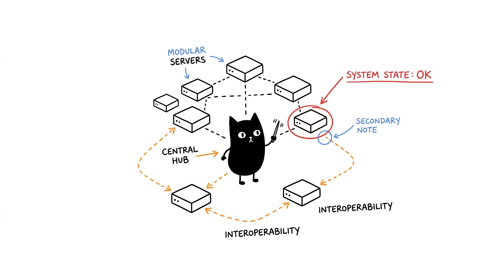

Architecture
Two backbones coordinate ten cells over standard MCP stdio (JSON-RPC 2.0). Mitosis reasons and routes; Genome remembers. Every other cell is stateless behind its boundary.

The dual backbone
| Backbone | Owns | Never owns |
|---|---|---|
Mitosis (hela-mitosis) | Step-by-step reasoning, task decomposition, tool-chain routing, prompt templates | Persistent state |
Genome (hela-genome) | SQLite knowledge graph, entities/relations, session context, central sync | Execution decisions |
Interaction rule: agents reason through Mitosis, persist through Genome, act through the remaining cells. Verified synergies (see npm test): Mitosis+Genome (backbone), Enzyme+Cytosol (research), Membrane+Nucleus+Ribosome (workspace).
Transport
All cells speak MCP over stdio: newline-delimited JSON-RPC 2.0 on stdin/stdout, logs on stderr. No ports, no auth, no network — the client spawns node <dir>/<entry> per config/inventory.json. Pinned revisions per cell keep installs deterministic (--dev tracks branches instead).
Server reference
Ten cells. Scope CORE runs headless; SPECIALIZED needs GUI, device, or runtime extras.
HeLa Mitosis
hela-mitosis · chaining-mcp · CORE · 18 toolsCognitive division and orchestration. Peer tool discovery, sequential reasoning, task decomposition, 42 domain prompt templates, optional OpenRouter-backed LLM tools (X-Title: hela-mitosis).
entry dist/index.js · repo 1999AZZAR/chaining-mcp · env OPENROUTER_API_KEY, CHAINING_LLM_MODEL, CHAINING_LLM_ENABLED, GITHUB_TOKEN…
analyze_with_sequential_thinking, sequentialthinking, workflow_orchestrator, llm_decompose_task, llm_query, llm_summarize, search_prompts, get_prompt, list_mcp_servers, validate_tool_chain
HeLa Genome
hela-genome · project-mcp · CORE · 34 toolsLiving SQLite knowledge graph (memory.db) with FTS5 search, entity-relation tracking, cross-session restoration, secret scanning.
entry dist/index.js · repo 1999AZZAR/project-mcp
initialize_memory, create_entity, create_relation, add_observation, search_nodes, open_node, get_session_context, sync_central_memory, execute_sql, query_data, inspect_untrusted_text, scan_project_secrets
HeLa Membrane
hela-membrane · filesystem-mcp · CORE · 16 toolsSandboxed filesystem boundary: recursive search, watching, binary inspection, archives.
entry dist/index.js · repo 1999AZZAR/filesystem-mcp
read_file, write_file, copy_file, move_file, delete_file, get_file_info, create_directory, list_directory, find_files, search_in_files, watch_file, archive_files, extract_archive
HeLa Nucleus
hela-nucleus · terminal-mcp · CORE · 5+ toolsIsolated command execution with subshell containment and RTK token optimization.
entry build/index.js · repo 1999AZZAR/terminal-mcp
execute_command, transfer_file, terminal_ls, terminal_grep, terminal_cat
HeLa Ribosome
hela-ribosome · menager-mcp · CORE · 28 toolsPolyglot PTY multiplexing plus a native opencode control plane: spawn/send/fork routed agent sessions, model discovery, usage stats, warm serve instances.
entry build/index.js · repo 1999AZZAR/menager-mcp
session_spawn, session_write, session_read, session_hook, session_wait, session_close, agent_spawn, agent_send, agent_fork, agent_list, opencode_models, opencode_server_spawn
HeLa Enzyme
hela-enzyme · researcher-mcp · CORE · 29 toolsUnified Google + Wikipedia research with caching, fact-checking, and the one-call research_brief fan-out (parallel sources, cross-source dedup, freshness stamps).
entry dist/index.js · repo 1999AZZAR/researcher-mcp · env GOOGLE_API_KEY, GOOGLE_CSE_ID, WIKIPEDIA_*
google_search, wikipedia_search, wikipedia_get_summary, fact_checker, academic_search, content_summarizer, extract_content, research_brief, keyword_extraction
HeLa Cytosol
hela-cytosol · browser-mcp · CORE · 93 toolsFull Playwright automation: AX-tree perception, form filling, intercepts, screenshots, session persistence.
entry src/server.js · repo 1999AZZAR/browser-mcp
browser_navigate, browser_click, browser_fill_form, browser_screenshot, browser_get_page_markdown, browser_get_accessibility_tree, browser_intercept, browser_extract_schema
HeLa Phenotype
hela-phenotype · designer-mcp · SPECIALIZED · 29 toolsDesign-Theory-as-a-Service: OKLCH tokens, brand references (Linear, Stripe…), Tailwind synthesis, 8-state components, WCAG audits, anti-slop gates.
entry dist/index.js · repo 1999AZZAR/designer-mcp
generate_rules, generate_tokens, palette_fetch, brand_fetch_design_md, generate_tailwind_config, generate_8state_component, audit_accessibility, evaluate_style
HeLa Receptor
hela-receptor · scrcpy-mcp · SPECIALIZED · 46 toolsAndroid automation over ADB: XML hierarchy inspection, tap/swipe/text, recording, app lifecycle. Needs device or emulator.
entry dist/server.js · repo 1999AZZAR/scrcpy-mcp
start_session, device_list, device_info, ui_dump, ui_find_element, tap, swipe, input_text, key_event, screenshot, screen_record_start, app_install, shell_exec
HeLa Plastid
hela-plastid · ll3m-mcp · SPECIALIZED · 15 toolsAutonomous Blender modeling: plan → procedural script → render → .blend. Needs Blender 4+.
entry brain/dist/index.js · repo 1999AZZAR/ll3m-mcp
generate_modeling_plan, execute_blender_code, get_scene_summary, render_output, save_blend, get_screenshot, get_fast_feedback